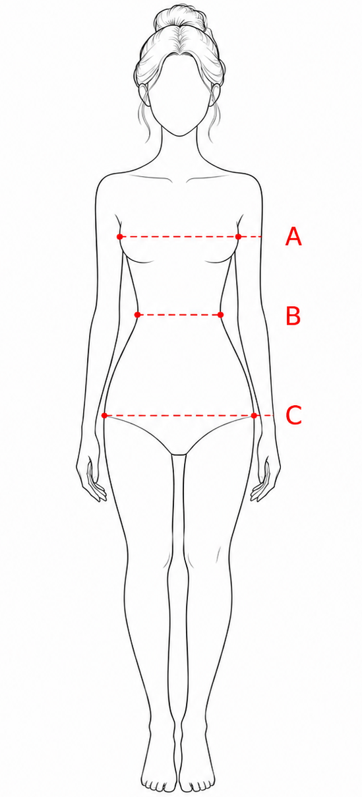

LEO GOLD · SIZE GUIDE WOOMEN
Ми в LEO GOLD віримо, що одяг має підкреслювати індивідуальність і дарувати комфорт. Саме тому ми створили розмірну таблицю, яка допоможе зорієнтуватися під час вибору виробу.
Усі параметри вказані в сантиметрах. Для точнішого вибору рекомендуємо орієнтуватися на власні заміри.

| XS–S 34–36 | S–M 36–38 | M–L 38–42 | L–XL 42–46 | XL–2XL 46–50 | 2XL–3XL 50–54 | |
|---|---|---|---|---|---|---|
| Обхват грудей A (см) | 78-85 | 82-89 | 86-94 | 94-102 | 102-112 | 112-122 |
| Обхват талії B (см) | 60-67 | 64-71 | 68-76 | 76-84 | 84-94 | 94-106 |
| Обхват стегон C (см) | 84-91 | 88-95 | 94-102 | 102-110 | 110-118 | 118-128 |
Також доступне індивідуальне виготовлення з урахуванням зросту та пропорцій фігури.
Виміряте обхват грудей, талії та стегон у найширших точках, не затягуючи сантиметрову стрічку. Порівняй результати з таблицею та оберіть розмір, який найбільше відповідає вашим параметрам.
Якщо ваші заміри перебувають між двома розмірами або ти хочеш уточнити посадку виробу, напиши нам — допоможемо зорієнтуватися з вибором.